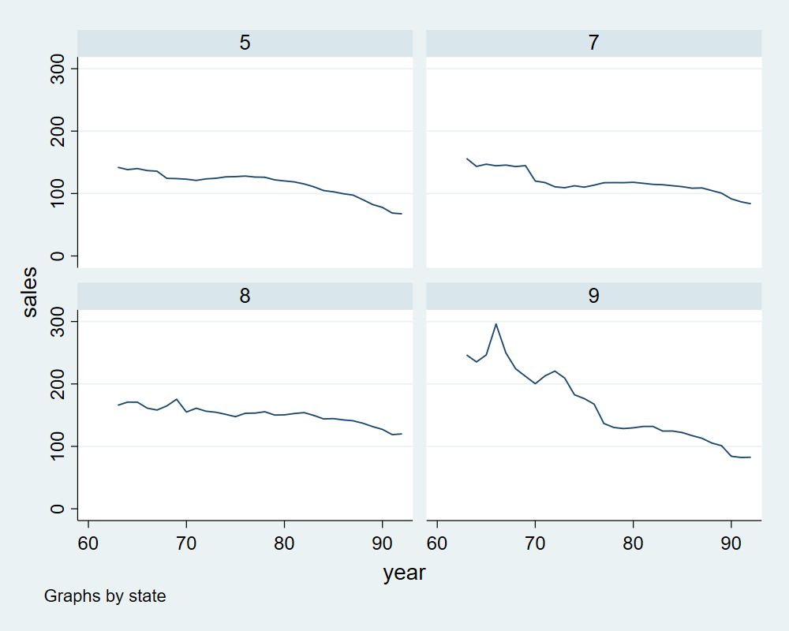

Rincón de Práctica Stata
Contents
Rincón de Práctica Stata¶
Datos Panel usando Stata¶
Data¶
import ipystata
%%stata
import delimited http://www-eio.upc.edu/~pau/cms/rdata/csv/Ecdat/Cigar.csv, clear
xtset state year
---------------------------------------------------------------------------
com_error Traceback (most recent call last)
File C:\ProgramData\Miniconda3\lib\site-packages\win32com\client\dynamic.py:86, in _GetGoodDispatch(IDispatch, clsctx)
85 try:
---> 86 IDispatch = pythoncom.connect(IDispatch)
87 except pythoncom.ole_error:
com_error: (-2147221021, 'Operation unavailable', None, None)
During handling of the above exception, another exception occurred:
com_error Traceback (most recent call last)
Cell In[2], line 1
----> 1 get_ipython().run_cell_magic('stata', '', ' import delimited http://www-eio.upc.edu/~pau/cms/rdata/csv/Ecdat/Cigar.csv, clear\n xtset state year\n')
File C:\ProgramData\Miniconda3\lib\site-packages\IPython\core\interactiveshell.py:2493, in InteractiveShell.run_cell_magic(self, magic_name, line, cell)
2491 with self.builtin_trap:
2492 args = (magic_arg_s, cell)
-> 2493 result = fn(*args, **kwargs)
2495 # The code below prevents the output from being displayed
2496 # when using magics with decorator @output_can_be_silenced
2497 # when the last Python token in the expression is a ';'.
2498 if getattr(fn, magic.MAGIC_OUTPUT_CAN_BE_SILENCED, False):
File C:\ProgramData\Miniconda3\lib\site-packages\ipystata\ipystata_magic.py:320, in iPyStataMagic.stata(self, line, cell, local_ns)
318 time.sleep(0.5)
319 self.log_dict[session_id] = os.path.join(self._lib_dir, 'log_%s.txt' % session_id)
--> 320 self.session_dict[session_id] = win32com.client.Dispatch("stata.StataOLEApp")
321 self.do_dict[session_id] = self.session_dict[session_id].DoCommandAsync
322 self.session_dict[session_id].UtilShowStata(1)
File C:\ProgramData\Miniconda3\lib\site-packages\win32com\client\__init__.py:117, in Dispatch(dispatch, userName, resultCLSID, typeinfo, UnicodeToString, clsctx)
115 """Creates a Dispatch based COM object."""
116 assert UnicodeToString is None, "this is deprecated and will go away"
--> 117 dispatch, userName = dynamic._GetGoodDispatchAndUserName(dispatch, userName, clsctx)
118 return __WrapDispatch(dispatch, userName, resultCLSID, typeinfo, clsctx=clsctx)
File C:\ProgramData\Miniconda3\lib\site-packages\win32com\client\dynamic.py:106, in _GetGoodDispatchAndUserName(IDispatch, userName, clsctx)
103 ## ??? else userName remains None ???
104 else:
105 userName = str(userName)
--> 106 return (_GetGoodDispatch(IDispatch, clsctx), userName)
File C:\ProgramData\Miniconda3\lib\site-packages\win32com\client\dynamic.py:88, in _GetGoodDispatch(IDispatch, clsctx)
86 IDispatch = pythoncom.connect(IDispatch)
87 except pythoncom.ole_error:
---> 88 IDispatch = pythoncom.CoCreateInstance(
89 IDispatch, None, clsctx, pythoncom.IID_IDispatch
90 )
91 else:
92 # may already be a wrapped class.
93 IDispatch = getattr(IDispatch, "_oleobj_", IDispatch)
com_error: (-2147221164, 'Class not registered', None, None)
%%stata
xtline sales if state>4&state<10

Modelo FE¶
\[sales_{it}=\alpha_i+x'_{it}\beta+u_{it}\]
con \(\alpha_i\) efecto fijo asociado al estado.
%%stata
xtreg sales price pop pop16 ndi, fe r
Fixed-effects (within) regression Number of obs = 1,380
Group variable: state Number of groups = 46
R-squared: Obs per group:
Within = 0.2844 min = 30
Between = 0.2740 avg = 30.0
Overall = 0.1558 max = 30
F(4,45) = 32.69
corr(u_i, Xb) = 0.1106 Prob > F = 0.0000
(Std. err. adjusted for 46 clusters in state)
------------------------------------------------------------------------------
| Robust
sales | Coefficient std. err. t P>|t| [95% conf. interval]
-------------+----------------------------------------------------------------
price | -.3513145 .1682916 -2.09 0.043 -.6902711 -.0123579
pop | -.0087096 .0059391 -1.47 0.149 -.0206716 .0032523
pop16 | .0112986 .0092271 1.22 0.227 -.0072858 .0298831
ndi | .0010731 .0020565 0.52 0.604 -.0030689 .0052152
_cons | 141.4895 6.238091 22.68 0.000 128.9253 154.0536
-------------+----------------------------------------------------------------
sigma_u | 24.842588
sigma_e | 14.898338
rho | .73548253 (fraction of variance due to u_i)
------------------------------------------------------------------------------
Modelo RE¶
%%stata
xtreg sales price pop pop16 ndi, re r
Random-effects GLS regression Number of obs = 1,380
Group variable: state Number of groups = 46
R-squared: Obs per group:
Within = 0.2842 min = 30
Between = 0.2384 avg = 30.0
Overall = 0.1624 max = 30
Wald chi2(4) = 123.33
corr(u_i, X) = 0 (assumed) Prob > chi2 = 0.0000
(Std. err. adjusted for 46 clusters in state)
------------------------------------------------------------------------------
| Robust
sales | Coefficient std. err. z P>|z| [95% conf. interval]
-------------+----------------------------------------------------------------
price | -.3676653 .1650456 -2.23 0.026 -.6911487 -.0441818
pop | -.0087648 .0069247 -1.27 0.206 -.022337 .0048073
pop16 | .0111637 .0099851 1.12 0.264 -.0084067 .0307342
ndi | .0012399 .0020123 0.62 0.538 -.0027041 .0051839
_cons | 142.0622 7.412126 19.17 0.000 127.5347 156.5897
-------------+----------------------------------------------------------------
sigma_u | 21.045538
sigma_e | 14.898338
rho | .66616216 (fraction of variance due to u_i)
------------------------------------------------------------------------------
Modelo Two-way FE¶
\[sales_{it}=\mu_i+\mu_t+x'_{it}\beta+u_{it}\]
con \(\alpha_i\) efecto fijo asociado al estado y \(\mu_t\) efecto fijo asociado al año.
%%stata
reghdfe sales price pop pop16 ndi, absorb(state year) vce(r)
(MWFE estimator converged in 2 iterations)
HDFE Linear regression Number of obs = 1,380
Absorbing 2 HDFE groups F( 4, 1301) = 47.62
Prob > F = 0.0000
R-squared = 0.8467
Adj R-squared = 0.8375
Within R-sq. = 0.2304
Root MSE = 12.4910
------------------------------------------------------------------------------
| Robust
sales | Coefficient std. err. t P>|t| [95% conf. interval]
-------------+----------------------------------------------------------------
price | -.8296836 .0894201 -9.28 0.000 -1.005107 -.6542602
pop | -.0025949 .0019491 -1.33 0.183 -.0064187 .0012288
pop16 | .0040946 .0025701 1.59 0.111 -.0009475 .0091366
ndi | -.0057015 .0008145 -7.00 0.000 -.0072994 -.0041037
_cons | 221.843 7.428401 29.86 0.000 207.2701 236.416
------------------------------------------------------------------------------
Absorbed degrees of freedom:
-----------------------------------------------------+
Absorbed FE | Categories - Redundant = Num. Coefs |
-------------+---------------------------------------|
state | 46 0 46 |
year | 30 1 29 |
-----------------------------------------------------+
Panel Dinámico¶
\[sales_{i,t}=sales_{i,t-1}+\mu_i+x'_{i,t}\beta+u_{i,t}\]
con \(\alpha_i\) efecto fijo asociado al estado
%%stata
xtabond sales price pop pop16 ndi, vce(robust)
Arellano-Bond dynamic panel-data estimation Number of obs = 1,288
Group variable: state Number of groups = 46
Time variable: year
Obs per group:
min = 28
avg = 28
max = 28
Number of instruments = 411 Wald chi2(5) = 15775.72
Prob > chi2 = 0.0000
One-step results
(Std. Err. adjusted for clustering on state)
------------------------------------------------------------------------------
| Robust
sales | Coef. Std. Err. z P>|z| [95% Conf. Interval]
-------------+----------------------------------------------------------------
sales |
L1. | .8646417 .0236058 36.63 0.000 .8183752 .9109082
|
price | -.0661191 .0353343 -1.87 0.061 -.1353731 .0031348
pop | -.0046988 .0030159 -1.56 0.119 -.0106099 .0012122
pop16 | .0056149 .0036481 1.54 0.124 -.0015352 .012765
ndi | -.0000592 .0003699 -0.16 0.873 -.0007841 .0006658
_cons | 23.41488 3.986634 5.87 0.000 15.60122 31.22854
------------------------------------------------------------------------------
Instruments for differenced equation
GMM-type: L(2/.).sales
Standard: D.price D.pop D.pop16 D.ndi
Instruments for level equation
Standard: _cons